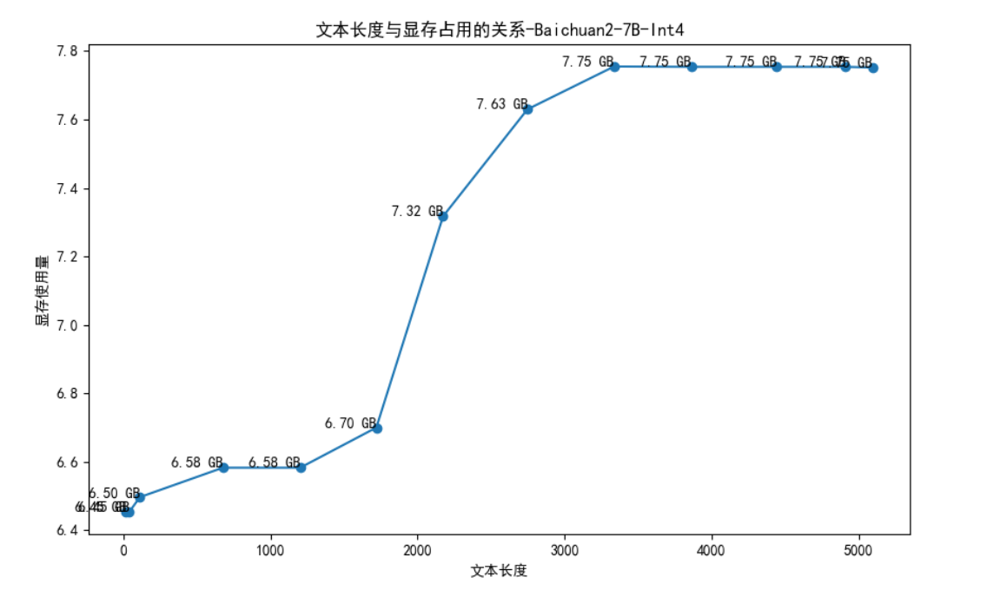

10.3 Baichuan2 部署与分析
baichuan作为首批开源的国产大语言模型，具备7B和13B两个尺寸，在多个子任务上有出色表现，本节就来了解baichuan系列大模型。
Baichuan 简介
Baichuan开源大模型由百川智能研发，目前最新开源版本为Baichuan2，闭源版本为Baichuan3。
百川智能成立于2023年4月10日，由前搜狗公司CEO王小川创立。公司以帮助大众轻松、吾普惠地获取世界知识和专业服务为使命，致力于通过语言AI的突破，构建中国最优秀的大模型底座。
Baichuan2提供7B，13B两个尺寸，具体如下
| 基座模型 | 对齐模型 | 对齐模型 4bits 量化 | |
|---|---|---|---|
| 7B | Baichuan2-7B-Base | Baichuan2-7B-Chat | Baichuan2-7B-Chat-4bits |
| 13B | Baichuan2-13B-Base | Baichuan2-13B-Chat | Baichuan2-13B-Chat-4bits |
更多关于Baichuan的信息，可查阅：
- 公司首页：https://www.baichuan-ai.com/home
- github: https://github.com/baichuan-inc
- 技术报告：https://arxiv.org/abs/2309.10305
本地部署安装
第一步，下载下载baichuan2代码
git clone https://github.com/baichuan-inc/Baichuan2
第二步，下载7B-in4模型权重
git clone https://huggingface.co/baichuan-inc/Baichuan2-7B-Chat-4bits
（也可以通过github desktop下载）
第三步，环境配置
根据Baichuan2中的 requirements.txt进行安装，其中pytorch环境自行配置，要求 pytorch ≥ 2.x
pip install -r requirements.txt -i https://pypi.tuna.tsinghua.edu.cn/simple
第四步，报错处理
根据官方的教程，安装了requirements.txt后报错，通常会报错：
init model ...
A matching Triton is not available, some optimizations will not be enabled
Traceback (most recent call last):
File "C:\Users\yts32\anaconda3\envs\pt220\lib\site-packages\xformers\__init__.py", line 55, in _is_triton_available
from xformers.triton.softmax import softmax as triton_softmax # noqa
File "C:\Users\yts32\anaconda3\envs\pt220\lib\site-packages\xformers\triton\softmax.py", line 11, in <module>
import triton
ModuleNotFoundError: No module named 'triton'
C:\Users\yts32\anaconda3\envs\pt220\lib\site-packages\bitsandbytes\cuda_setup\main.py:166: UserWarning: Welcome to bitsandbytes. For bug reports, please run
python -m bitsandbytes
如果是linux，可以尝试
pip install bitsandbytes==0.41.1 -q
pip install accelerate==0.25.0 -q
参考自：https://github.com/baichuan-inc/Baichuan2/issues/52
如果是windows，可以尝试，先下载bitsandbytes-windows版的0.41.1的安装包，再手动安装。原因是通过pip install bitsandbytes，只能获得linux的，而windows的目前最高版本时0.37.x，因此需要手动下载安装。
https://github.com/jllllll/bitsandbytes-windows-webui/releases/download/wheels/bitsandbytes-0.41.1-py3-none-win_amd64.whl
pip install bitsandbytes-0.41.1-py3-none-win_amd64.whl
参考自：https://github.com/baichuan-inc/Baichuan2/issues/35
如果报错：TypeError: 'NoneType' object is not subscriptable
pip install accelerate==0.25.0 -q
如果报错：auto-gptq 0.7.1 requires accelerate>=0.26.0, but you have accelerate 0.25.0 which is incompatible.
https://github.com/AutoGPTQ/AutoGPTQ
pip install auto-gptq==0.6
第五步，配置路径
model， model.generation_config， tokenizer三个的路径需要配置
def init_model():
print("init model ...")
model = AutoModelForCausalLM.from_pretrained(
r"G:\04-model-weights\Baichuan2-7B-Chat-4bits",
torch_dtype=torch.float16,
device_map="auto",
trust_remote_code=True
)
model.generation_config = GenerationConfig.from_pretrained(
r"G:\04-model-weights\Baichuan2-7B-Chat-4bits"
)
tokenizer = AutoTokenizer.from_pretrained(
r"G:\04-model-weights\Baichuan2-7B-Chat-4bits",
use_fast=False,
trust_remote_code=True
)
return model, tokenizer
第六步，运行cli_demo.py
C:\Users\yts32\anaconda3\envs\chatglm\python.exe D:\github_desktop\Baichuan2\cli_demo.py
init model ...
bin C:\Users\yts32\anaconda3\envs\chatglm\lib\site-packages\bitsandbytes\libbitsandbytes_cuda121.dll
欢迎使用百川大模型，输入进行对话，vim 多行输入，clear 清空历史，CTRL+C 中断生成，stream 开关流式生成，exit 结束。
用户：你好
Baichuan 2：
你好今天我能为您提供什么帮助？
用户：你是谁
Baichuan 2：我是百川大模型，是由百川智能的工程师们创造的大语言模型，我可以和人类进行自然交流、解答问题、协助创作，帮助大众轻松、普惠的获得世界知识和专业服务。如果你有任何问题，可以随时向我提问
模型结构分析
Baichuan2的模型结构可通过如下UML类图了解，其他更多模型结构可以参考前两节Qwen和ChatGLM的结构分析。

Prompt 结构分析
baichuan2的Prompt结构是经典的三角色设计，包括system, user, assistant。
在示例代码中，并没有给出system的预设，需要分析源代码后才看到system可通过messages来维护。bichuan2中的messages等同于history的作用，用于记录历史对话信息。
一个真实的messages如下：
[{'content': '你好', 'role': 'user'},
{'content': '你好今天我能为您提供什么帮助？', 'role': 'assistant'},
{'content': '今天天气如何', 'role': 'user'}]
特殊token处理
不同的角色之间，通常用特殊token标记，在baichun2代码中，可通过generation_config中看到特殊token的index，但对应的text没有显示给出。
\.cache\huggingface\modules\transformers_modules\Baichuan2-7B-Chat-4bits\generation_utils.py
# 以下代码是组装历史对话的代码段，首先判断当前角色，然后获取角色分隔token
for message in round:
if message["role"] == "user":
round_tokens.append(model.generation_config.user_token_id)
else:
round_tokens.append(model.generation_config.assistant_token_id)
单轮推理长度限制
模型支持的上下文是4K，这里包括输入+输出=4K，在单轮对话时，会对输入长度做限制。
首先，预留2K是用于本轮对话的输出，因此输入的最大长度为4K-2K=2K。详细代码如下：
max_input_tokens = model.config.model_max_length - max_new_tokens
input_tokens = input_tokens[-max_input_tokens:] # truncate left
其中：
model.config.model_max_lengt = 4096
max_new_tokens = 2048
参考自：C:\Users\yts32\.cache\huggingface\modules\transformers_modules\Baichuan2-7B-Chat-4bits\generation_utils.py
对于输入超过2K的情况，是会被向左截断。
显存与上下文长度分析
百川官方给出了字符串长度与token之间的换算的比例，一般情况下Baichuan2大模型1个token约等于1.5个中文汉字。详见产品定价：https://cq6qe6bvfr6.feishu.cn/wiki/DOxNw9t97iwL3hkPB41ctfsMnMI
通过分析发现：
- 在未进行对话时，显存仅占用5.3GB
- 第一次对话时，显存立即飙升到6.4GB
- 前2000字符显存消耗不高，2000之后显存消耗激增
- 超过3500字符后，同样出现了截断（参考Qwen、ChatGLM的分析）

统计代码如下，完整代码cli_demo.py位于github
conversation_length = sum([len(content['content']) for content in messages])
import subprocess
import json
result = subprocess.run(['gpustat', '--json'], stdout=subprocess.PIPE)
output = result.stdout.decode()
data = json.loads(output)
used_memory = data['gpus'][0]['memory.used']
f.writelines("{}, {}\n".format(conversation_length, used_memory))
f.flush()
小结
本节对Baichuan2模型进行了本地部署安装，并分析模型结构、prompt结构、推理上限机制、显存分析等内容，有助于进一步理解LLM原理。
下一小节，分析Yi。